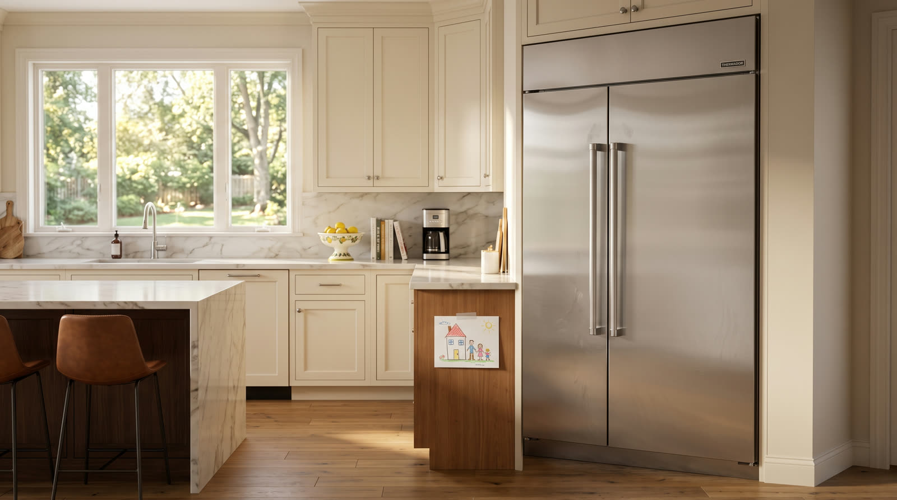

Thermador refrigeration
Rising temperature is a countdown, not an inconvenience. We schedule it that way.

When a Thermador refrigerator loses its cold, one link in the chain has usually let go rather than the whole system. A condenser coil suffocating under dust. An evaporator fan that stopped moving air. A damper stuck shut, a sensor feeding fiction to the control, a compressor down on capacity, or refrigerant escaping through a joint too small to see.
Each cause has a different price, which is exactly why guessing is expensive. Our diagnostic walks the refrigeration circuit in order, verifies the failure with real readings, and puts the result in front of you with one written price. Say yes and the diagnostic fee disappears into the repair.
Dust and pet hair blanket the coil until it cannot reject heat. The unit runs constantly, cools poorly, and ages fast. Also the most preventable failure on this list.
Cold is being made but not delivered. Compartments drift warm while the machine sounds perfectly normal.
The path between compartments closes and one side freezes while the other warms. Common in bottom freezer models.
Bad temperature data in, bad decisions out. We read live sensor values against a reference thermometer.
Refrigerant seeps away over weeks and performance fades with it. Gauges settle the question definitively.
The heart of the machine loses capacity gradually. We measure before we ever pronounce, because this word should never be used casually.
Warm refrigerator calls take priority over everything routine, seven days a week. Most of our map sees a tech the same day or the following morning.
Keep the doors closed as much as possible. A loaded refrigerator holds its cold surprisingly long when nobody opens it. Skip the urge to empty it into coolers unless we tell you otherwise.
Built in Thermador refrigeration is designed for decades of service, and a correct repair usually costs a small fraction of replacement. We give you real numbers and an honest read, then the call is yours.
One phone call and the problem becomes ours. Open daily, 7am to 7pm.
First callers get first pick of the same day windows. The $89 diagnostic credits toward the repair, so the answer itself ends up costing nothing.